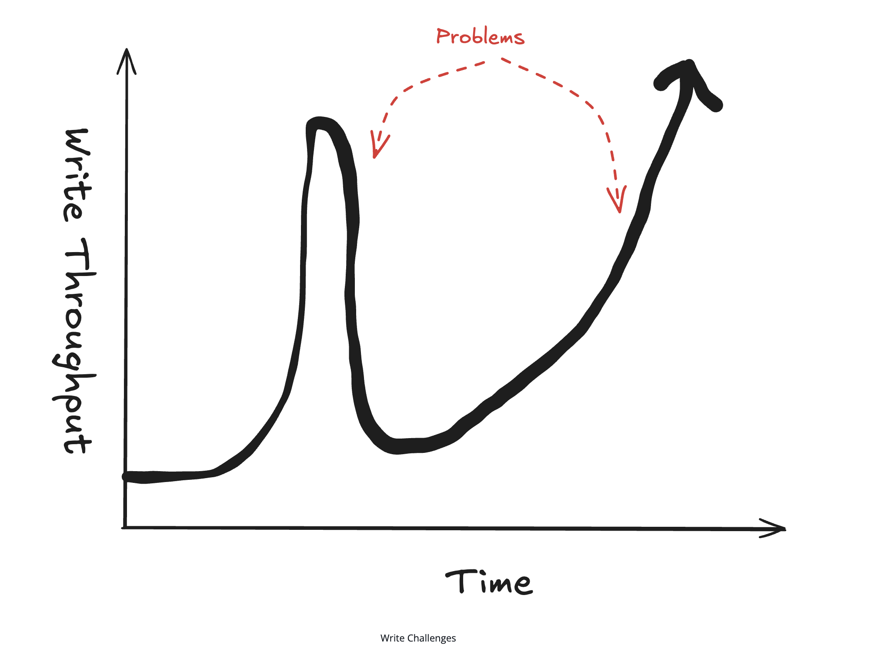

📈 Scaling Writes — System Design Interview Cheat Sheet¶
A practical, interview-ready guide to handling high-volume write traffic in large-scale systems.
🎯 What Is Scaling Writes?¶
Scaling writes is the challenge of handling high-throughput, bursty write operations when a single database or server becomes a bottleneck due to: - Disk I/O limits - CPU saturation - Network bandwidth constraints

Unlike reads (which are easy to cache or replicate), writes are harder to scale and are a favorite topic in system design interviews.
🧠 Core Interview Insight¶
Write scaling is about reducing load per component — not just adding hardware.
You do this by: - Spreading writes - Smoothing bursts - Reducing write frequency - Dropping low-value writes when necessary
🧩 The 4 Fundamental Write-Scaling Strategies¶
1️⃣ Vertical Scaling & Write Optimization (Start Here)¶
Before adding architectural complexity, always check if a single machine can go further.
Vertical Scaling¶
- Upgrade CPU, RAM, SSDs, and network
- Modern servers can handle far more writes than many candidates assume
- Use back-of-the-envelope math to validate limits
Write Optimizations¶
- Reduce number of indexes
- Batch write-ahead-log (WAL) flushes
- Disable expensive DB features during high-write periods:
- Foreign keys
- Triggers
- Full-text indexes
📌 Interview Tip: Show restraint — don’t shard prematurely.
2️⃣ Database Choices (Write vs Read Tradeoff)¶
Some databases are optimized specifically for write-heavy workloads.
Key Idea¶
- Optimizing writes often hurts reads
- You must identify the real bottleneck first
Examples of Write-Optimized Storage¶
- Append-only / log-structured storage
- Time-series databases (sequential writes)
- Column-oriented databases (batch-friendly)
General Optimizations¶
- Fewer indexes = faster writes
- Larger batch commits
- Sequential disk access > random seeks
📌 Interview Signal: Explain why a DB is good for writes, not just which DB.
3️⃣ Sharding & Partitioning (Horizontal Scaling)¶
When one machine is no longer enough, distribute writes across many.
Horizontal Sharding¶
- Split data across multiple servers (shards)
- Route writes using a partitioning key
Choosing a Good Partition Key¶
- Goal: even distribution of writes
- Good keys:
- userId
- postId
- Bad keys:
- country
- region
⚠️ Poor keys create hot shards and wasted capacity.
📌 Always ask: - How many shards does one request hit? - How often does that request happen?
Vertical Partitioning¶
Split data by access pattern, not rows.
Example (Social Media Post): - Post content → write-once, read-many - Engagement metrics → high-frequency writes - Analytics/events → append-only
Benefits: - Each dataset can scale independently - Different storage engines per workload
📌 This is a data modeling problem as much as a scaling problem.
4️⃣ Handling Bursts: Queues & Load Shedding¶
Real-world traffic is not steady — bursts are inevitable.
Write Queues¶
Used to absorb short-lived spikes in traffic.
Benefits: - Decouples write acceptance from processing - Smooths bursty traffic
Tradeoffs: - Async writes - Eventual consistency - Risk of unbounded backlog if steady-state is broken
📌 Use queues for bursts, not as a band-aid for insufficient capacity.
Load Shedding¶
When overloaded, reject or drop low-value writes.
Examples: - Drop frequent location updates - Drop impressions but keep clicks - Ignore near-duplicate updates
📌 Better to partially degrade than to fail entirely.
5️⃣ Batching & Hierarchical Aggregation (Big Wins)¶
Instead of accepting every write as-is, change the shape of writes.
Batching¶
Combine many writes into fewer operations.
Where batching can happen: - Application layer - Intermediate processors - Database layer
Benefits: - Fewer network calls - Lower transaction overhead
Tradeoffs: - Added latency - Possible data loss if the app crashes
📌 Batching only helps if many writes target the same data.
Hierarchical Aggregation (Extreme Scale)¶
Used in analytics, metrics, and live systems.
Pattern: - Aggregate writes in stages - Reduce data volume at each step
Examples: - Likes/comments aggregation - Stream analytics - Live dashboards
📌 Converts N×M writes into manageable batches at the cost of latency.
🔥 Common Interview Deep Dives¶
🔁 Resharding¶
Problem: Need to add shards without downtime.
Solution: - Gradual migration - Dual writes (old + new shards) - Read preference for new shards
🔥 Hot Keys¶
When a single key overwhelms a shard.
Solutions: - Split key into multiple sub-keys - Aggregate on reads - Dynamic splitting for viral items
Tradeoffs: - Write amplification - Read amplification
📌 Works best for counters and metrics, not atomic objects.
🧪 When to Use (and When Not To)¶
✅ Use When:¶
- Write throughput is the main bottleneck
- Traffic is bursty or unpredictable
- System handles metrics, feeds, analytics
❌ Avoid When:¶
- Scale is small
- Latency requirements are strict
- Complexity outweighs benefit
📌 Always justify with quick math.
🧠 Final Interview Takeaway¶
Scaling writes = making each component handle manageable load
You achieve this by: - Sharding writes - Smoothing bursts - Batching operations - Aggregating data - Dropping low-value writes
Strong candidates: - Identify write bottlenecks early - Apply the simplest solution first - Clearly explain tradeoffs
✅ This pattern appears frequently in: - Social media systems - News feeds - Search indexing - Analytics pipelines - Live streaming platforms
End of Cheat Sheet